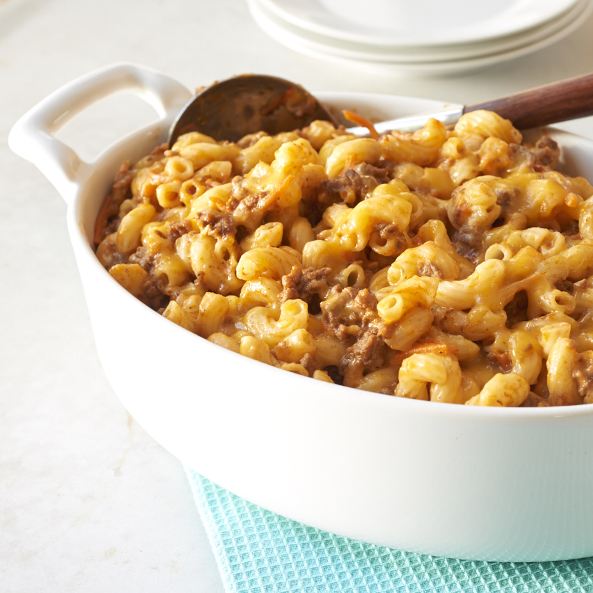

Ground Beef Casserole

Description
Some bussin casserole from me grandma as well.
Love dat and sure you'll love it too.
Ingredients
- Ground Beef
- Tomato Sauce
- Seasonings
- Pasta
- Sour cream and Cream Cheese
- Onion
- Cheddar Cheese
Steps
- Cook and season the Ground Beef
- Cook Egg Noodles
- Mix Sour Cream and Cheese
- Assemble and Bake